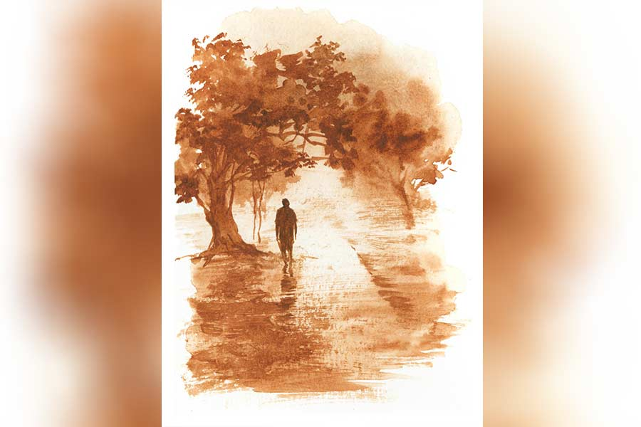

খরস্রোত
গৌতম বন্দ্যোপাধ্যায়
কবিরাজ জেঠামশাইয়ের হাত থেকে ওষুধ নিয়ে “আচ্ছা, জেঠামশাই,” বলে বেরিয়ে আসছিল শশিকান্ত, হঠাৎ তাঁর ডাকে পিছন ঘুরল। বলল, “ডাকছেন জেঠু?”
অবিনাশ কবিরাজ বললেন, “তুমি কোন আপিসে যেন চাকরি করো?”
“প্লেস, সিডনস অ্যান্ড গাফ মার্চেন্ট ফার্ম।”
“বেশ, বেশ। এই নভেম্বর মাসের ছাব্বিশ তারিখে তুমি সাতাশ বছরে পড়বে, তাই না?”
“একদম ঠিক। আপনি আমার জন্মতারিখ খেয়াল রেখেছেন জেঠামশাই?”
“রাখব না? ওই একই তারিখে যে হতভাগিটাও এসেছিল। শুধু বছরখানেক পর, এই যা।”
শশিকান্ত লক্ষ করল, অবিনাশ জেঠু আবার তাঁর জায়গায় ফিরে গেছেন। পাঠে মনোনিবেশের আগে চশমাটা পরে নিয়েছেন। সে আর সময় নষ্ট না করে, দ্রুত বাড়ির পথে রওনা হল।
বাড়ি ফিরে শশিকান্ত দেখল, পিসিমা একটা বাটি থেকে জল নিয়ে জেঠিমার মাথায় জলপট্টি দিচ্ছেন। সে পিসিমার হাত থেকে বাটিটা নিয়ে বলল, “আমি জলপট্টি দিচ্ছি, তুমি বরং এই ওষুধটা খাইয়ে দাও জেঠিমাকে।”
শশিকান্ত কাপড়ের পট্টি জলে ভিজিয়ে জেঠিমার মাথায় দিতেই, বিভাবতী তার হাত ধরে বললেন, “আমি বাঁচব তো শশী?”
শশিকান্ত হাসতে হাসতে বলল, “বাঁচবে না কেন? এই তো কবিরাজ জেঠু ওষুধ পাঠিয়ে দিয়েছেন। কাল নিজে দেখতে আসবেন তোমাকে।”
কেউ আর কোনও কথা বলে না। শুধু নিভাননী শশিকান্তকে বলেন, “তুই এ বার ঘরে যা। সেই সকালে বেরিয়েছিস। একটু বিশ্রাম কর। আমি একটু পরে তোকে খেতে দিচ্ছি।”
শশিকান্ত জেঠিমার ঘর থেকে বেরিয়ে আসে। নিজের ঘরে যেতে গিয়ে থমকে দাঁড়ায় সে। কাকার ঘর থেকে গান ভেসে আসছে। নতুন কলের গান কিনেছেন কাকা। প্রতিদিন গদি থেকে ফিরে কলের গান শুনতে শুনতে কাকা মদ্যপান করেন, এ কথা সে জানে। তবু সে দাঁড়ায়। দাঁড়িয়ে থাকে। তার পর দ্রুত নিজের ঘরে চলে যায়।
খুব ভোরবেলায় ঘুম ভেঙে যায় শশিকান্তর। তার মনে হয়, দরজায় কেউ ধাক্কা দিচ্ছে। পিসির গলা পায়। শশিকান্তর নাম ধরে ডাকছেন পিসি। শশিকান্তর বুকটা ধক করে ওঠে— তা হলে কি জেঠিমার কিছু হল? তাড়াতাড়ি উঠে দরজা খুলতেই, পিসি ঘরের মধ্যে ঢুকে পড়ল। ঘরে ঢুকেই নিভাননী বললেন, “পুলিশ সারা বাড়ি ঘিরে ফেলেছে।”
“কিন্তু, কেন... জেঠামশাইয়ের সঙ্গে তো আর বিপ্লবী দলের যোগ নেই, তা হলে?” শশিকান্তর ঘুমচোখে বিস্ময়।
“তোর সঙ্গে আছে বিপ্লবীদের যোগ। তাই ওরা তোর খোঁজে এসেছে। দু’জন অফিসার তোর কাকার সঙ্গে কথা বলছে। তোকে জিজ্ঞাসাবাদ করতে বোধহয় থানায় নিয়ে যাবে। চল, দেখি কী হয়। আমাকে এক বার বলে রাখবি তো?” নিভাননী আঁচল দিয়ে চোখের জল মোছেন।
শশিকান্ত কিছুই বুঝতে পারে না। তার মনে হয় কোথাও একটা ভুল হয়েছে। তবু কথা না বাড়িয়ে পিসিকে অনুসরণ করে বৈঠকখানার ঘরে এসে উপস্থিত হয়। দেখে, তার কাকার উল্টো দিকের চেয়ারে দু’জন পুলিশ অফিসার বসে।
শশিকান্ত আসতেই তাদের এক জন বলে উঠল, “তোমার নাম শশিকান্ত বন্দ্যোপাধ্যায়?”
শশিকান্ত সম্মতিসূচক ঘাড় নাড়তেই, অন্য অফিসারটি বলল, “তোমাকে আমাদের সঙ্গে থানায় যেতে হবে।”
“কেন?” শশিকান্ত অবাক হয়ে প্রশ্ন করল।
অফিসারটি উমানাথের দিকে একবার তাকিয়ে শশিকান্তকে বলল, “সেটা থানায় গিয়েই জানবে।”
শশিকান্ত তবু মৃদু প্রতিবাদ করে বলল, “আমার বিরুদ্ধে আপনাদের অভিযোগ কী?”
অফিসার দু’জন শশিকান্তর কথার কোনও উত্তর না দিয়ে চেয়ার ঠেলে উঠে দাঁড়াল। তার পর এক জন কনস্টেবলকে ডেকে শশিকান্তকে হাতকড়া পরিয়ে পুলিশ গাড়িতে বসাতে বলল।
কনস্টেবল শশিকান্তর হাতে হাতকড়া পরানোর মুখেই জ্বর গায়ে ঘর থেকে বেরিয়ে এলেন বিভাবতী। ঘোমটার আড়ালে তার মুখ দেখা যাচ্ছে না, কিন্তু কণ্ঠস্বর সকলের কানে পৌঁছল, “কী অপরাধে আমাদের ছেলেকে আপনারা থানায় নিয়ে যাচ্ছেন?”
অফিসার দু’জন বিভাবতীর কথায় সামান্য হলেও চমকে গেলেন। তার পর সামলে নিয়ে উমানাথের দিকে তাকালেন। উমানাথ অফিসারদের বললেন, “আপনারা আপনাদের কাজ করুন। আমি বৌদিকে বুঝিয়ে বলছি।”
শশিকান্তকে নিয়ে পুলিশের দলটি চলে যাওয়ার পর, বিভাবতী তার কণ্ঠস্বর বাড়ালেন, “যা খুশি তাই করবে... কী পেয়েছে কী ওরা? কোনও কারণ ছাড়াই ধরে নিয়ে যাবে? আজ যদি তিনি এখানে থাকতেন...” বিভাবতী নিজের ঘরের দিকে পা বাড়ালেন।
“বৌদি,” উমানাথ বলে উঠলেন। চেয়ারে এত ক্ষণ মাথা নিচু করে বসে ছিলেন তিনি।
বিভাবতী দাঁড়িয়ে গেলেন। অপেক্ষা করলেন, উমানাথ কী বলেন সেটা শোনার।
“শশী বিপ্লবী দলের সদস্য। সাহেব মারার জন্য ও বোমা তৈরি করে। দক্ষিণেশ্বরে বোমা তৈরির কারখানায় শশী নিয়মিত যেত। কাল রাতে সেখানে অনেক ধরপাকড় হয়েছে,” উমানাথ এক নিঃশ্বাসে কথাগুলো বলে গেলেন।
বিভাবতী একটা অবজ্ঞাসূচক শব্দ করলেন, “সব মিথ্যে কথা। আমাদের শশী এমন কাজ করতে পারে না,” বলে ঘরে ফিরে গেলেন।
আলিপুর সেন্ট্রাল জেলে শশিকান্তকে যখন নিয়ে যাওয়া হল, সে তখনও জানে না, কেন তাকে ধরে নিয়ে এসেছে ওরা। সে শুনেছে, পুলিশ বিনা দোষে এ রকম অনেককেই ধরে নিয়ে যায়। এটা যে তার ক্ষেত্রেও ঘটবে, সেটা তার কল্পনার বাইরে ছিল। জেল অফিসে একটি চেয়ার দেখিয়ে শশিকান্তকে বসতে বলা হল। সে দেখল, তার পাশের চেয়ারে বসে আছে ঈশান, তার পাশে রাজেন লাহিড়ী। আরও যারা আছে, তাদের চিনতে পারল না সে। তবে তার কাছে সমস্ত বিষয়টি এ বার পরিষ্কার হল। দক্ষিণেশ্বরের বাচস্পতিপাড়ার বাড়ি থেকে পুলিশ এদের তুলে এনেছে। সে আরও বুঝল, শুধু দক্ষিণেশ্বর নয়, বরাহনগর ও শোভাবাজারেও কয়েকটি বাড়িতে তল্লাশি চালিয়ে কয়েক জনকে ধরে নিয়ে এসেছে। ওই সব বাড়িতেও নাকি বোমা তৈরি হত।
শশিকান্ত চেয়ারে বসতেই ঈশান তার দিকে তাকাল। তার দৃষ্টিতে বিস্ময়। তবু হাসল শশিকান্তর দিকে চেয়ে। শশিকান্ত হাসল না। সামনের দিকে বিরস মুখে তাকিয়ে রইল।
ঈশানের জিজ্ঞাসাবাদ চলছিল। প্রশ্নকর্তা বাঙালি অফিসার শশিকান্তকে দেখিয়ে ঈশানকে বলল, “এই ছেলেটিকে চেনো?”
ঈশান জোরে মাথা নেড়ে জানিয়ে দিল যে, সে শশিকান্তকে চেনে।
বাঙালি অফিসার এ বার ঈশানকে জিজ্ঞেস করল, “দক্ষিণেশ্বরে ওই বাড়িতে প্রায়ই আসে, তাই তো?”
“না,” বেশ জোর দিয়ে বলল ঈশান, “শশিকান্ত শুধু গতকালই ওই বাড়িতে গিয়েছিল। তাও স্বেচ্ছায় নয়। আমিই ওকে নিয়ে গিয়েছিলাম। শশী আমার ছেলেবেলার বন্ধু। অনেক দিন পর দেখা হয়েছিল, তাই আমাদের গোপন ডেরায় ওকে নিয়ে গিয়েছিলাম। ঠিক করিনি। আমার জন্যই ওকে আজ এই বিপদে পড়তে হল।”
“ও তোমাদের দলের সদস্য নয়?”
“না, ওর সে সাহস নেই। আমি অনেক বার বলেছি, ও আসেনি। কিন্তু খুব সাচ্চা ছেলে। ও নির্দোষ। ওকে ছেড়ে দিন স্যর।”
“সেটা আমি বুঝব।”
অনেক জিজ্ঞাসাবাদ ও একটি মুচলেকা লেখার পর শশিকান্ত যখন জেল কর্তৃপক্ষের হাত থেকে ছাড়া পেল, তখন সন্ধে হয়েছে। শশিকান্ত সেন্ট্রাল জেল ফটকের বাইরে এসে বহমান জনজীবনের স্রোতের দিকে চেয়ে রইল খানিক ক্ষণ। সে তাদেরই এক জন। স্বাধীনতার এই লড়াইয়ে অনেকের মতো তারও কোনও ভূমিকা নেই। সে কাপুরুষ, ক্লীব।
বাড়িতে ঢোকার মুখে কাকার সঙ্গে মুখোমুখি দেখা হয়ে গেল। উমানাথ তখন ছড়ি দুলিয়ে সান্ধ্যভ্রমণে যাচ্ছিলেন। শশিকান্তকে দেখে থমকে দাঁড়ালেন। বললেন, “ছেড়ে দিল?”
শশিকান্ত বলল, “হ্যাঁ, প্রমাণ কী যে ধরে রাখবে?”
শশিকান্তর গলা পেয়ে নিভাননী ও বিভাবতী দু’জনেই বেরিয়ে এসেছেন। নিভাননী তার আদরের ভাইপোর মাথায় হাত রেখে বলল, “আমি জানতাম।”
বিভাবতী বললেন, “আমি তো বলেই ছিলাম যে আমাদের শশী এমন কাজ করতে পারে না।”
“তা হলে কি পুলিশ শুধু শুধু এসেছিল? ওদের কাছেও খবর ছিল। এমনি এমনি কারও বাড়িতে পুলিশ আসে না। শশীর গতিবিধি ওরা নজরে রাখছিল,” উমানাথ বললেন।
সান্ধ্যভ্রমণ স্থগিত করে উমানাথ তত ক্ষণে ঘরে ফিরে এসেছেন। গায়ের হালকা সুতির আলোয়ানটি খুলতে খুলতে শশিকান্তকে শুনিয়ে বললেন, “ঘরের খেয়ে বনের মোষ তাড়াতে চাইলে, এ বাড়িতে জায়গা হবে না। বিপ্লবী দলের কোনও ছেলের সঙ্গে মাখামাখি দেখলে আমি নিজে গিয়ে পুলিশে জানিয়ে আসব।”
শশিকান্ত কোনও উত্তর দিল না।
জবাব দিতে ছাড়লেন না বিভাবতী। বললেন, “তোমার দাদা এখানে থাকলে, তুমি এই ধরনের কথা বলতে পারতে?’’
“দাদা আমাদের অনেক ক্ষতি করেছে বৌদি। দাদার জন্যই এখনও আমাদের বাড়ির উপর পুলিশের চোখ আছে। নিজে তো গৃহত্যাগী সন্ন্যাসী হয়ে দিব্যি সরে গেলেন। এত সব ঝক্কি আমাকেই পোয়াতে হচ্ছে,” বলে উমানাথ তাঁর ঘরের দিকে ফেরেন।
উত্তর দিতে গিয়েও বিভাবতী নিজেকে সংবরণ করেন। ধীরপায়ে তিনিও তাঁর ঘরের দিকে যান। বজ্রকঠিন মহিলারও গাল বেয়ে জলের ধারা নামে।
৩৮
বেশ কিছু দিন হল, হরপার্বতী কংগ্রেসে ভিড়েছে। শশিকান্তকে সঙ্গে নিতে চেয়েছিল। কিন্তু সে রাজি হয়নি। কংগ্রেসের নীতি ও আদর্শের প্রতি তার বিশেষ আস্থা নেই। সে মনে করে, বেশির ভাগটাই তাদের আড়ম্বর। কাজের কাজ কিছু করতে পারে না। তা ছাড়া, গান্ধী লোকটাকেও তেমন পছন্দ হয় না শশিকান্তর। আন্দোলন কখনও অহিংস হয় না, হতে পারে না। ইংরেজদের বিরুদ্ধে তো নয়ই। অথচ এই মানুষটি কিছুতেই এটা বুঝবেন না। বছর ছয়েক আগে, নিজের জেদের বশে কী ভুলটাই না তিনি করলেন! গোরক্ষপুরের চৌরিচৌরাতে পুলিশের লাঠি চালানোর প্রতিবাদে যেই না কয়েক জন আন্দোলনকারী থানায় আগুন ধরাল, অমনি দেশব্যাপী অত বড় একটা আন্দোলন বন্ধ করে দিলেন। যেন সবটাই নিজের খেয়ালখুশি, কারও কথা শোনার প্রয়োজন মনে করলেন না। দেশের মানুষকে ভুল বোঝাচ্ছেন তিনি। তাঁর নেতৃত্বে কংগ্রেস চললে ভারতে কখনওই স্বাধীনতা আসবে না। এই সব কথা হরপার্বতীকে বলায় সে খুব রেগে গিয়েছিল। মোহনদাসের নিন্দে সে একেবারেই সহ্য করতে পারে না। সে দিনই সে কংগ্রেস পার্টিতে যোগদান করে।
হরপাবর্তী শিক্ষিত যুবক। কংগ্রেসে শিক্ষিত যুবকের সংখ্যা কম নয়। তবু হরপার্বতীর মতো উচ্চমেধার যুবক কংগ্রেসে বেশি নেই। কংগ্রেসের জগমোহন বসু তার বয়সি বা তার থেকে কিছু বড় হবেন। মূলত, তাঁর প্রতিষ্ঠিত ‘বাগবাজার দর্জিপাড়া কংগ্রেস’ অফিসে গিয়েই হরপার্বতী কংগ্রেসের সভ্যপদ গ্রহণ করে। জগমোহন নিজেও শিক্ষিত। কলকাতা পুরসভায় চাকরির পাশাপাশি আইন নিয়েও পড়াশোনা করছেন। বিকেলের দিকে তাঁর বাসভবনে নীচের তলায় একটি ঘর গমগম করে কংগ্রেসি নেতা ও কর্মীদের আগমনে। হরপার্বতী সেখানে নতুন। একটু গুটিয়ে রাখে নিজেকে। নেতা হয়ে বড় বড় কথা বলার সে বিরোধী। সে গান্ধীর পথে দেশের সেবা করতে চায়।
এক দিন তার সঙ্গে আলাপ হল বঙ্কিম মুখোপাধ্যায়ের। কৃশকায়, লম্বা, চশমা-পরা এই মানুষটির প্রতি প্রথম দিন থেকেই আকৃষ্ট হয়েছিল হরপার্বতী। জগমোহনের কাছে শুনেছে যে, ভদ্রলোক ইতিপূর্বে অসহযোগ আন্দোলনে অংশ নিয়ে জেল খেটেছেন। কংগ্রেসের এই অফিসে তিনি রোজ আসেন না, মাঝেমধ্যে আসেন। কিন্তু যে দিনই আসেন, সবার মনোযোগ কেড়ে নেন। ভদ্রলোক নিজেই আলাপ করলেন তার সঙ্গে। বললেন, “জগমোহনের কাছে শুনলাম, আপনি অধ্যাপনা করেন। কোন কলেজে, জানতে পারি?”
“নিশ্চয়ই,” হরপার্বতী সঙ্গে সঙ্গে উত্তর দেয়, “স্কটিশ চার্চ কলেজে।”
“বেশ, বেশ। তা কংগ্রেসে কী মনে করে?”
“আমি মোহনদাস করমচাঁদ গান্ধীর ভক্ত। আমি মনে করি গান্ধীর পথই ভারতের স্বাধীনতা পাওয়ার পথ। তাই কংগ্রেসে যোগ দিলাম।”
“গান্ধীকে অনুসরণ করে অনেকে ঠকেছে। তারা কেউ কেউ রাজনীতিও ছেড়ে দিয়েছে।”
“আমিও না-হয় ঠকব।”
বঙ্কিম মুখোপাধ্যায় স্থির দৃষ্টিতে তাকিয়ে রইলেন হরপার্বতীর দিকে। তার পর শুধু একটা শব্দই উচ্চারণ করলেন, “শাবাশ...”
ক্রমশ